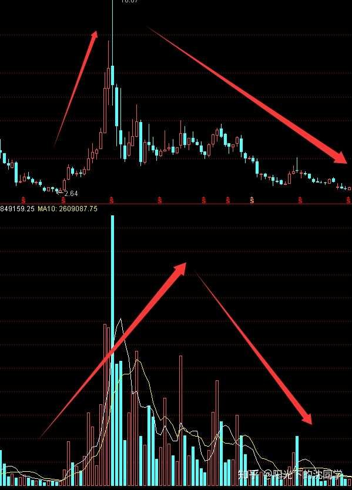
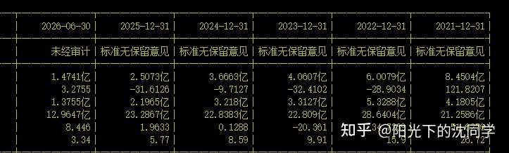
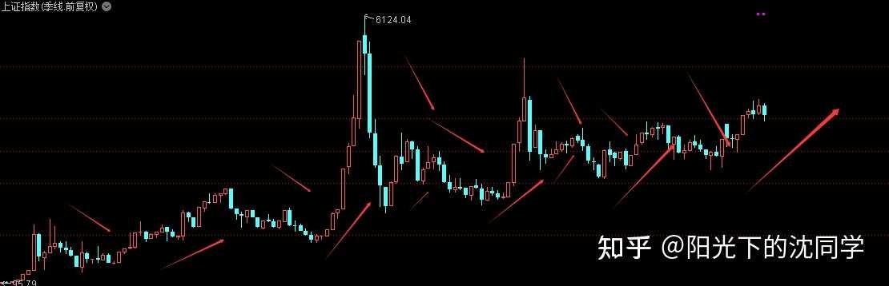
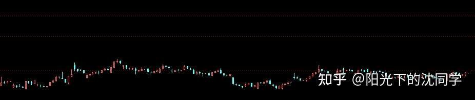
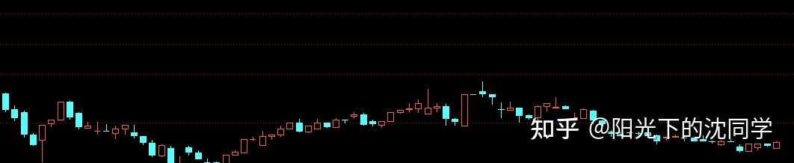
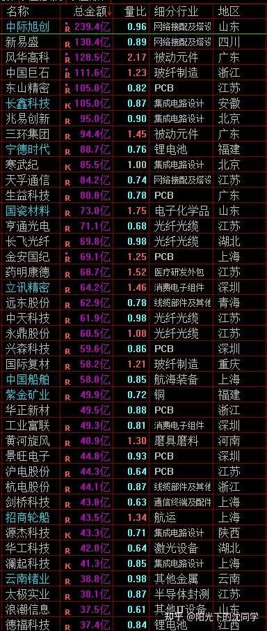
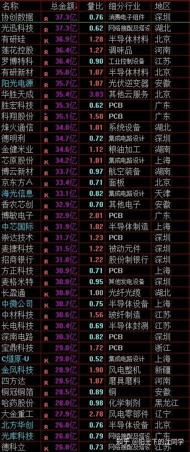
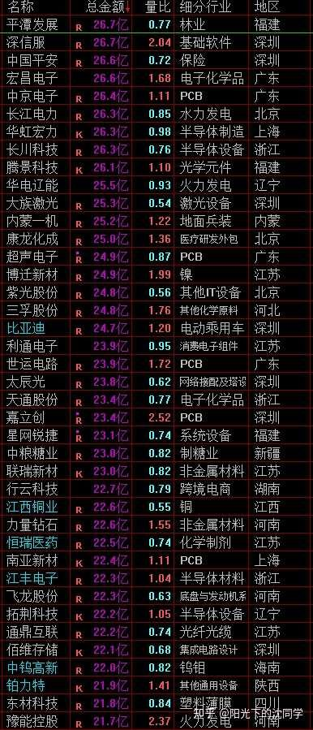

本文的核心观点在于深度剖析A股熊市及下跌趋势下的资金博弈机制与仓位管理原则。作者指出，市场本质是一个资金加杠杆与去杠杆的动态循环。在成交量低迷、大资金活跃度下降的下跌周期中，高位高估值和业绩失去成长性的个股将面临巨大的杀跌空间。其因果传导逻辑在于：增量资金入场推动换手率放大、估值泡沫膨胀；而一旦流动性退潮，成交量萎缩，市场便进入去杠杆的痛苦挤泡沫阶段。因此，新手的核心生存策略不是盲目左侧抄底，而是通过严格将总仓位控制在55%以下、多留现金、配置低波动资产（如债券、黄金、红利资产）来规避系统性风险，等待右侧企稳信号。
今天专门来聊聊未来可能有巨大跌幅的股票有哪些特征，可以帮大家避避坑
1，
资金面的判断
目前整体市场成交量越来越差，大资金活跃度下降，过去很多大单出没，现在大部分都是中小单在交易
在这种资金面大环境不太好的情况下，如果目前个股成交量依旧是比较大的，但走势是比较难看的，估值是高的，这种还有巨大下跌空间
因为资金面相当于是股价的加杠杆和去杠杆，这个专业的股价演变逻辑，是大家一定要记笔记的，必须要收藏起来慢慢理解的
股价在资金面越来越大的时候，成交量，换手越来越大的时候，股价是加杠杆的，上升趋势开始，牛市开始，这个时候是可以炒作到很贵的，可以突破平时估值上限的
一旦成交量下降了，就是一个股价去杠杆的过程
下面随便找一个股票截图，大家可以看看

【多空力量与心理博弈】上图清晰展示了股价随成交量“从无到有、从有到无”的周期轮回。成交量放大对应多头疯狂涌入与情绪高潮（股价冲高至10元），而随后的长阴线与缩量阴跌则暴露了主力资金撤退后、散户独自苦撑的残酷现实。 【新手提示】图形完美证明了“量在价先”，看到高位放巨量滞涨或无量阴跌，必须立刻离场，防止被打回原形。
走势非常明显
在成交量低迷的时候股价2-3块钱，成交量爆发起来股价7-10块钱，后面成交量下去了直接股价打回原形
所以一旦成交量不太行了，尤其是市场整体要走下跌趋势了，要调整到位，必须是成交量要完全去杠杆，成交量要完完全全见底，股价的水分泡沫才会见底
在这个过程中，你能力强的投资者可以做一些超跌反弹什么的，但短线交易能力一般般的投资者，最好的选择就是一直观察，不要乱抄底，等待行情企稳，等待企业资金面修复，成交量见底
如果你提前抄底，觉得从10块钱跌到5块钱已经很便宜，买了确实赚了一点，不走，到时候继续杀跌，继续跌回历史低点或者新低
这个就是资金面的一个股价加杠杆和去杠杆的过程
对于目前很多高位，高估值，基本面又一般般的企业，他如果成交量不是在历史低位，那么未来下跌空间是巨大的，这种股票早出来早好
下跌趋势的调整是1-3年的，每次反弹都是越来越低的，一定要注意这方面的风险
2，
基本面
熊市容易错杀，容易跌过头注【本质逻辑】在熊市或弱市中，市场情绪极度悲观，恐慌盘会导致资金不计成本地抛售优质甚至成长性受损的企业，使其价格远低于其内在价值。【新手提示】面对业绩下滑或失去成长性的公司，切忌盲目“死扛”或无脑补仓，情绪面的杀伤力往往远超基本面恶化本身。的当然不仅仅是比较贵的，泡沫大的高位股票
基本面比较差，暴雷，表现不如之前的，业绩下滑的也一样是会跌幅很大的品种
比如说过去业绩增长20%，现在下滑了，或者增长少了，这些都是会被大资金抓住猛跌的，非常残酷
就像下面截图一样，企业行业不错，企业经营管理也不错，但业绩失去了成长性，一直在走弱，这种熊市是会跌过头的，也是要提前出来的，熬在里面下跌空间远超想象

3，
周期
上涨和下跌都是周期
就像下面上证指数截图一样，虽然A股很多人觉得难做，实际上A股也是涨涨跌跌的，也不是永远下跌，没有上涨的，只不过下跌周期比较漫长，跌起来比较狠，导致很多投资者熊市熬不住了，割肉了，牛市又容易突然发动，这种时候肯定跟不上
很多投资者就是这样被A股搞的没有脾气了，下跌一直折磨，上涨非常快，但凡是仓位控制差一点，体验会非常糟糕

【多空力量与心理博弈】上证指数的季线图直观呈现了A股“牛短熊长”的宏观周期规律。长达数年的缓慢下跌折磨着散户的心理底线，而牛市的爆发往往快且猛烈。 【新手提示】这说明试图在熊市中天天做短线、频繁满仓是极不理智的。控制仓位、熬过漫长的下跌周期，才是等待下一次牛市爆发时能够跟上节奏的唯一方法。
那么我们就需要考虑到周期
A股市场资金运作的典型周期就是牛市1-3年，大部分时间2年内，熊市2-4年，平均3年左右
其实大部分个股也是一样，这个就是A股的周期
如果你没有耐心，你觉得跌一下就调整到位，总是马上满仓，你肯定做不好A股
A股一旦走熊，我们去看季线，都是8根以上调整季线到位，一些行业差的，业绩差的股票甚至12-20根季线才调整到位
你在A股市场总是幻想牛市，买贵了，那很难做
所以目前已经走了一轮大涨的股票，未来都必然要走一波下跌趋势，这个就是周期，只要最近几年是上涨了一大波的，业绩非常非常好也逃不过4个以上季线调整，平均8根，所以这种股票是肯定不能碰的，高位股票在下跌趋势就是要避开的
资金面+周期+基本面，可以共同去判断个股未来可能的下跌空间和下跌时间，大家可以根据这些方法去重新审视自己的持仓
一定一定把仓位优化好，总仓位低于55%，不然熊市真的开启了，跌起来很难受的，这个不是开玩笑的事情
目前指数还是偏高的，实际上还有优化空间，真的等到熊市开始了，已经整体账户亏损30%，50%了，你再想优化仓位，我认为很被动，怎么做可能怎么错，优化仓位就是要未雨绸缪的
---
每天原创不易，读者朋友千万不要忘记点赞支持一下
正所谓先赞后看，腰缠万贯
大家可以先点一波赞，我们再继续慢慢聊
祝点赞的朋友福寿无量，天天开心
目前是下跌趋势，我们的一切交易都需要建立在行情不太好的基础上来做
因为交易策略需要有个大方向定调
上升趋势，行情好的时候，整体仓位，交易策略肯定会风险偏好高一点，整体仓位高一点，选择的品种也会更贴近热点，是去寻找赚钱机会，跟上交易
下跌趋势，行情不太好的时候，多留现金是核心的，然后在大跌中，看看有没有机会玩一玩，不对劲就止损出来，整体是保护本金安全为主
下跌趋势是可以休息的，做不好短线是无所谓的，一定要有耐心，因为你等的越久，你看好的资产后面越便宜，这个就是下跌趋势
牛市赚钱胜率高，赚钱到钱很多是行情+运气推动，我认为值得鼓励，也值得恭喜，但个人能力方面并不是主要的
熊市怎么少亏钱真的是个人能力体现
职业投资者，投资大师都是在股市活的久的，都是熊市可以不被市场摧毁的，都是风险意识高的
过于大胆，高估自己的风险承受能力，止损不果断，仓位优化不及时，仓位控制基本功不到位的，熊市都会亏损惨重
那不管你下一轮牛市可以赚多少钱，本金如果先亏你70%，你自己算一算回本要上涨多少？
要是下一轮牛市不涨你的，那又错过一轮牛市，这样熬下去，很多投资者就这样磨磨蹭蹭5-8年过去了一分钱赚不到
这个很现实，很多投资者都是这样的，所以大家一定要做好这些功课，避开熊市大跌，调整好仓位，多留现金
熊市可以不赚钱，不做短线，但要少亏钱，一整轮熊市结束，亏损20%以内都不算什么，都已经是非常优秀投资者，因为牛市涨起来比较容易，亏损20%以上，30%以上就会越来越难，50%以上就基本上要浪费一轮牛市了
而且每次行情上涨的品种也不一样，留着现金看清楚了再投永远是熊市最好的策略，希望大家谨记
最适合新手投资者，上班族，股龄10年内投资者的投资策略分享
美股可以继续等待后面杀跌的定投机会
黄金我自己已经开始定投，只要不出现突然大涨，每周定投一点没有问题，不要过于在意黄金短线波动，把握杀跌定投机会，长期抗通胀没有问题
债券值得重视，熊市最好的现金仓位，尤其是10年内的各种债券，他们的优点就是不管大环境怎么样，综合收益平稳，10年以上的债券波动比较大，有时候比很多红利都波动大，反而失去了债券的稳定性
大家应该筛选10年优质的债券资产分散配置，等你回过头来看，债券的收益跑赢市场上90%的股票，因为大部分股票熊市跌了30%-70%，债券每年还有稳定的收益，这个就是优势，你可以在熊市末期卖出债券加仓股票，债券就是这样优质的中转站品种
红利低位的可以关注，分化比较大，指数跌幅比较大的时候，高位红利一样会杀跌，所以只持有低位红利比较安全
整体来看这些资产的优点就是他们长期跑赢大部分资产，尤其是5-8年以上没有对手
对于资金量比较大的新手投资者，上班族朋友，你也不喜欢炒股，你不喜欢风险太高，你其实就希望自己的资产不贬值，可以稳定增值，你不是想成为职业投资者
你其实就应该主要去关注美股，黄金，债券，红利这些资产，好好去筛选这些优质的ETF，或者大熊市去配置一些A股，港股指数基金，也是可以的，这些都是很适合大部分家庭理财，稳健投资的朋友来做的
个股是可以完全不做的，现在的ETF太丰富了
我有时候看过去投资大佬写的书，都经常会担心买错了股票怎么办，去想办法分散持仓，去搞的自己买很多很多股票，不太好管理
现在了有了ETF，就解决了这个问题
你看好美股长期发展，你买纳斯达克，纳斯达克100，标普500，就可以了，无所谓哪个股票好，选股是职业投资者的事情
你知道港股，A股波动大，个股更难做，但也知道跌完了也会上涨，你在大跌的时候买指数基金，也是一样的，你可以稳定的吃这个收益，不需要碰个股，非常轻松
黄金可以抗通胀，红利可以带来现金流，可以长期复利，债券更安全，波动更小
这些都是比其他资产更稳健，长期更好的配置，为什么不去关注？
想获得超额收益，所以看不上这些利润，想多做一做个股，但大部分投资者驾驭不了个股，没有渠道调研企业，止损都做不好，个股基本上都是亏钱的，根本没有这样的基本功去做好个股
单纯的想赚钱没有用，你要有能力做好个股才能做个股
投资就是做自己认知，能力圈以内的事情，而不是单纯的因为想多赚钱，导致本金都亏掉
大家什么时候可以这样清醒，且理性的投资，什么时候就可以长期稳定复利

大家有任何投资疑问，有什么想交流的都可以付费咨询，想单纯支持一下也可以
【在知乎上我的主页咨询即可，没有任何群，不搞私下小圈子】
家庭资产长期稳健配置方案分享，仓位优化，估值分析，行业分析，心态调整，各种投资学习技巧都可以咨询
大家的支持和尊重是我创作的最大动力
感恩大家每天的付费咨询和打赏，感谢大家对知识的尊重，感谢大家对我的支持
欢迎提问
适合职业投资者，10年以上经验老股民，基本功极其扎实投资者的实战分享
继续聊实战
行情很不好做，长线持仓最近加了一部分港股
短线持仓只能在3950-3650杀跌的时候买一些低位科技，一些自选股里面看好的企业，试一试股息，开几个新仓感受一下
整体加仓非常谨慎，选股和止损都非常严格，情况不对就跑路，分时图只要不太行就出来，维持极高风险意识
而且这种行情只在杀跌时候加仓，成交量越来越弱，整体指数肯定是大趋势下降的，可以做的股票不会那么多
一定是本来就在低位，然后有杀跌的时候才会比较有短线博弈机会
就像下面图片这种，一直在低位盘中，已经非常非常便宜，不是那种走势下跌趋势，在高位的，就比较有机会

或者是下面这种，本来就在低位反复探底的，最近又跌回来，没有新低的，这种低位优质企业也可以博弈试一试

总之，交易一定要保守，总仓位一定要低
我自己剔除债券持仓，黄金+红利+美股+A股+港股+其他各种ETF已经不足50%仓位，和年初比整体仓位减少了非常多，短线账户目前经常清仓状态，长线账户前前后后减少30%左右
黄金，美股，包括很多长期持仓的红利资产是本来就不卖的，实际上持仓非常非常低了
能减仓的都减仓了，A股和港股都整体做了大瘦身，最近开始重新加一点港股
这种行情肯定是现金最重要，不是长期持仓的低成本仓位我认为都没必要持有，都是负担，后面都会有低点可以买的
所以现在55%的总仓位是极限，不是底仓注【本质逻辑】为了在长期震荡中保持对市场的敏感度并随时应对反弹，投资者长期持有且成本极低的一部分核心资产筹码。【新手提示】当前整体处于下跌趋势时，非核心、成本高的非底仓资产应当果断清理，切勿把所有筹码都当成“打不死的底仓”。，低于55%仓位属于必须要做到的，不然未来可能有不确定性风险
熊市最大的麻烦就是仓位过高，跌了没钱加仓，只要仓位控制好，熊市其实是机会，可以给你带来很多廉价筹码买点
下跌的时候才能加仓，才能去参与一些博弈，做一些自选股的股性测试
如果你现在的行情还维持高仓位，那会非常被动
未来行情的赚钱机会就是防守反击
指数大跌一波，你有现金买入，并且你的持仓不会损失太大，反弹起来可以获利了结，这个是下跌趋势的赚钱方法，没办法高举高打赚钱
你下跌的时候没钱买入，或者你的持仓不太好，也跟着大跌，那一样是麻烦的
所以大家现在最需要做的是两个事情，一个是优化仓位，一个是多留现金，其中有一个没有做好，其实都可能下跌趋势行情很难受
防御性一般般的持仓，不是非常核心非常便宜的资产，或者成本很低的资产，都是可以不要的，我选择不动美股，红利，黄金持仓还是看中了他们长期的稳定性表现，并且我自己本来这些持仓都很多年，整体成本非常低，我认为不需要太担心
如果是最近几年新开的，成本不太低的，可以清理的，我也会先出来看看，现在肯定是现金流比个股重要
不能等到大幅亏损了再意识到自己仓位控制不太好，希望大家都可以先知先觉
现在一定要有谨慎思维和风险意识了

【多空力量与心理博弈】展示了A股个股在弱势环境下的盘口成交额与量比分布。大量个股量比低于1，说明市场交投极度冷清，多头毫无反抗之力，整体属于典型的防御主导格局。 【新手提示】在多数个股缺乏大资金关注的环境下，切忌盲目高举高打，顺应趋势、多留现金防守才是活下去的硬道理。


风险提示：股市有风险，入市须谨慎
今天是坚持写复盘笔记的第1522天【每日打卡】
下面是我自己多年来的一些重要的心得感悟，分享给大家，会不定期增加内容
1，
长期投资成功的关键是稳定的情绪和沉稳的性格，这些比过人的天赋更重要
2，
最终我们穷其一生获得的一切经验、知识和所有财富都需要转化为自身的品德修养，不然获得越多失去越多
自身的修养是留住各种财富最好的容器，富裕一时不难，富裕一生不易
珍惜获得的一切，保持初心、慈善、知足，让自己的德行和财富共同成长，才能方得始终
3，
古之成大事者，不惟有超世之才，亦必有坚忍不拔之志
想成为优秀的投资者一定要持之以恒，不断学习，反思，总结，在投资中获得的各种经验最终都会成为你财务自由的砖瓦
4，
再高的智商也一样会被情绪一瞬间冲垮
大部分的亏损都来源于投资者的冲动和情绪化交易，学会控制自己的情绪和心态才能长期稳定的复利
5，
富在术数，不在劳身
一定要多思考，任何时候想清楚了再交易，漫无目的的交易，只会多做多错
6，
利在势居，不在力耕
投资赚钱主要靠把握时机，没有机会就休息，多留现金
做可以让自己心安的投资，便是对于你来说最好的盈利模式
7，
谨记：贪念起，万念俱灰！
控制住了风险，利润会随之而来
富贵险中求，也在险中丢
求时十之一，丢时十之九
美，港，A股长线+短线所有股票持仓投资方向配置比例参考：
金融：10%
消费：31%
生物医药：13%
AI产业链：7%
能源，动力：9%
高端制造：25%
周期：5%
【每3-6个月更新一次】
最新更新时间2026年9月
祝大家在如梦如幻的行情里清醒而自由
仓位情况【不推荐模仿】
短线博弈仓位：3%
长线+短线总仓位尽可能低于55%，这样更符合当前行情的风险程度
长线资产配置目前个人分散持有：各种债券ETF+各种核心红利ETF+美股ETF+黄金+优质REITS+长期看好的优质企业+核心ETF
全文逻辑总结：本文通过资金面（加杠杆与去杠杆）、基本面（业绩成长性）、周期律（牛短熊长）三个维度，深度拆解了A股下跌趋势中的风险传导机制。核心结论是：弱市中保护本金、控制仓位（总仓位低于55%）远比盲目寻找赚钱机会更重要。新手防踩雷法则：1. 严禁在成交量未见底前盲目左侧抄底；2. 坚决清退高位、高估值且业绩失去成长性的“雷区”股票；3. 善用ETF工具及黄金、债券、红利资产进行资产配置，避免因盲目操作个股而浪费整轮熊市的时间成本。

每日笔记
1、 美股可以继续等待后面杀跌的定投机会
2、 黄金已经开始定投，只要不出现突然大涨，每周定投一点没有问题
3、 债券值得重视，熊市最好的现金仓位
4、 红利低位的可以关注，分化比较大，所以只持有低位红利比较安全
老沈的学习笔记值得一看再看，逐步领会
没本事做短线的就老老实实苟着，继续定投继续苟。
沈同学真的有见地的
老沈终于又舍得放干货出来了，必须收藏一波
通过今天文章的意思，未来很多股票还有巨大下跌空间
我觉得我还是要减少10%-20%仓位，还是不能头太硬了，不然真的白费了天天听老沈念经，等我这几天再整理整理持仓，到时候减少一波仓位，把仓位下降到50%以内，我经历过熊市，就是经常记吃不记打，这次我要认真对待
人性就是喜欢即时满足，喜欢今天买明天涨，喜欢一夜暴富，慢慢变富？三年五年看不到效果，很多人熬一年就放弃了
我以前也一样，总觉得自己是天选之子，能快速发财，被市场毒打了好几年，才老老实实接受自己是个普通人，只能慢慢变富
接受平凡，可能才是投资的第一课
接受自己赚不了快钱，接受自己会犯错，接受财富需要时间积累，看似认输，实则是真正的开始
慢慢来，或许才会比较快
总仓位大概50%出头。40%现金仓位先拿去买了5-10年的国债ETF或者国债逆回购，留一点点现金保持机动性应急用。以前舍不得拿去买债券，嫌弃收益太低，觉得自己留着现金有更好机会。现在熊市了，必须要承认没有太多安全的机会，不如利用起来买债券，放一年也能多给自己发一个月工资，真有机会了也可以拿出来用。后面再研究一下银行有没有低位的股息也不错的，也可以考虑当一部分类现金仓位。现金仓位也是要有层次性的。一部分真现金，灵活性第一，要拿来应急用的。一部分国债逆回购，相对灵活，年化收益尚可。一部分5-10年国债ETF，总体来说很稳健，但是也有可能你刚买会跌一段时间，持有时间受限。长债或者银行就需要持有时间更长了，能玩明白的这种相当于现金底仓，收益更高，玩不明白的别碰。对于仓位控制严密的投资者来说，有一部分仓位是99.99%情况下都用不到的（极小概率满仓），这种就可以考虑当现金底仓。
老沈关于资金面、基本面、周期避坑的三重论述其实反过来就是选股宝典。先做好防守，避开大坑，有机会了再试着进攻。其实已经说的很明白了，一轮熊市下来，能控制亏损在20%以内的投资者已经很优秀。那对于新手来说，清仓就是最好选择。只不过老股民喜欢挑战一下自己的能力极限。（说的就是我）。
已经确定熊市，棺材板钉死了吗[捂脸]
9.15， 记录恒科回本之路的第3天，占比35%仓位，目前浮亏15个点，仓位占比 35%，今日恒科震荡微涨，未操作
PS：看了今天的文章，想优化仓位，感觉优化不出来，有几个仓位不重但都是亏损不舍得清掉，心魔难去哎
本周最重要的事情，优化仓位，减少持仓，仓位控制在50%以下。
今天文章干货满满，已做笔记。昨天讲的“周期位置跟踪”和今天沈同学说的“交易策略要有大方向定调”是关联的。我的理解是：先大致判断市场处于周期什么位置，再决定采取激进还是保守的策略。比如资产配置比例，周期在顶部区域，就不该加大权益投入；上涨或下跌趋势中该怎么做；周期在底部区域，是均匀配置还是优先加大某类资产，等等之类。最近我在盘整自己的投资体系，补上漏洞，尤其是需做出“周期位置跟踪表”，再用历史数据看它与市场的关联。这也属于个人交易策略的大方向定调的一个依据。未雨绸缪。
今天短线持仓有涨有跌，继续做T和小额定投。
多看少动。共勉